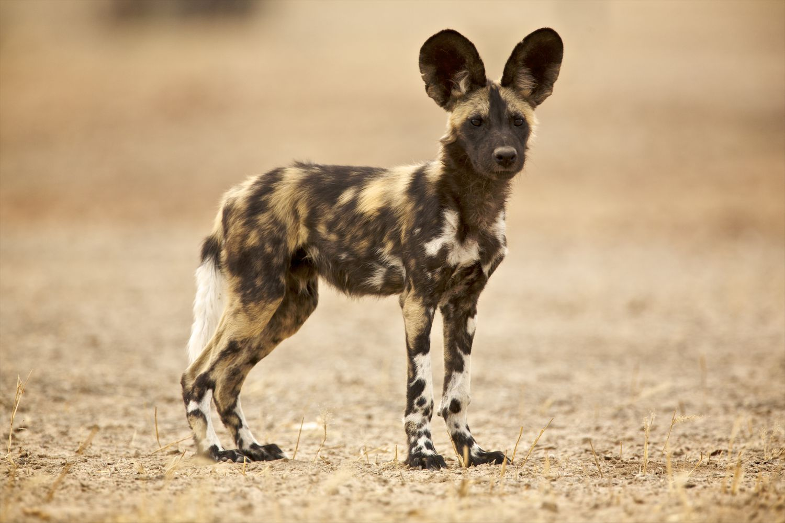
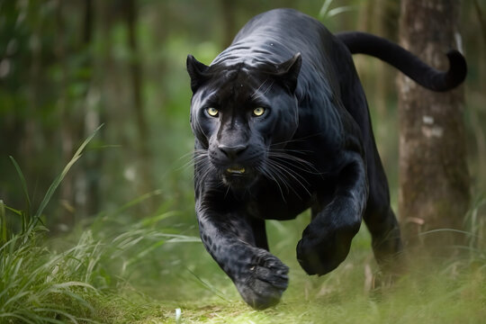
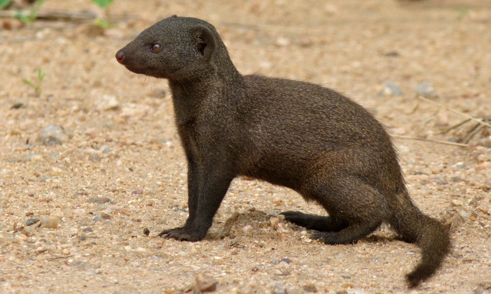
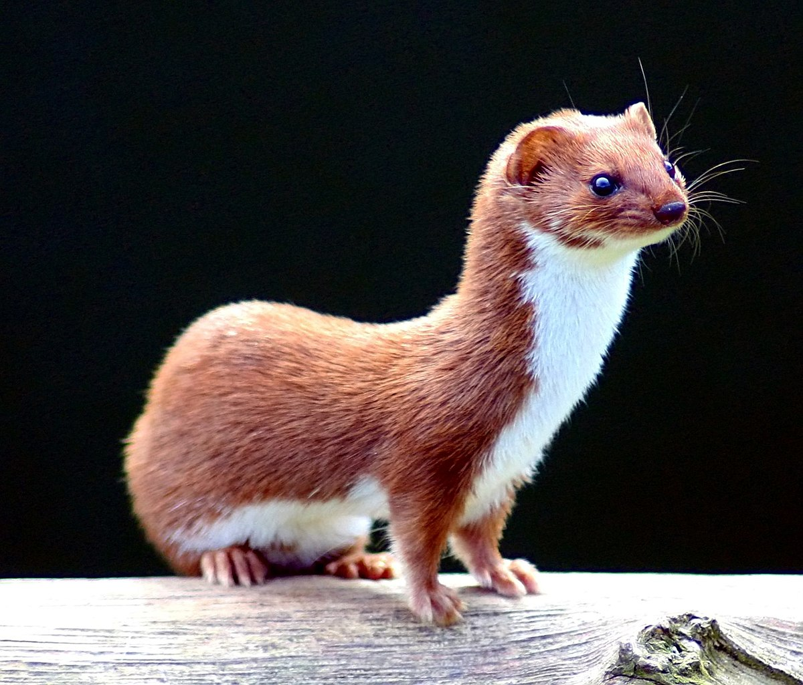
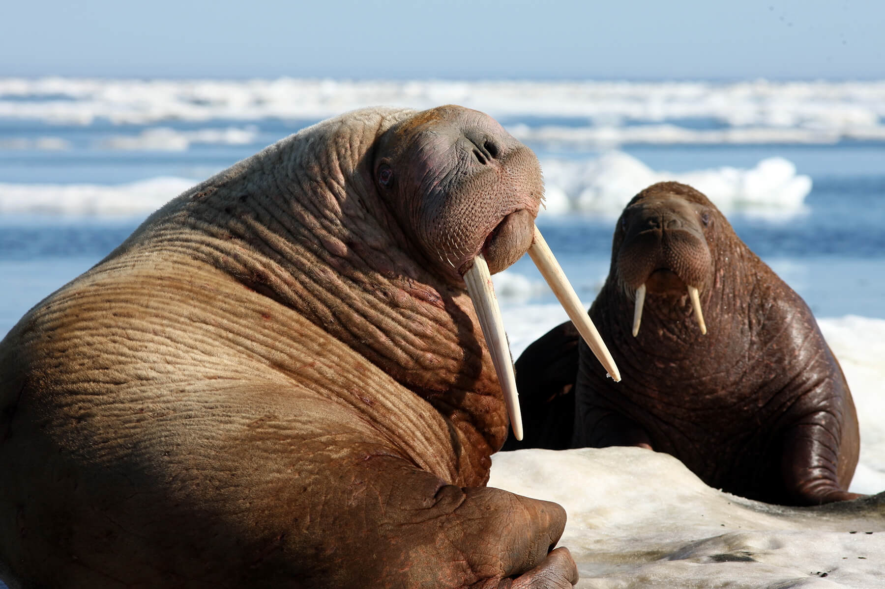

Order
About
This website will explore the Carnivora Order and explore the rest of the classifications under the order. Here will be where you can learn about some of the families that are apart of the Carnivora Order. Then you can take a deeper dive into the linked family below!
Carnivora
Two carnivores are probably the animals most familiar to people: the domestic dog and cat, which are both derived from wild members of this order. On the other hand, various bears, felines, canines, and hyenas are among the few animals that occasionally attack humans. These large, dangerous carnivores are often the objects of hunters, who kill them for display as trophies. Most luxurious natural furs (ermine, mink, sable, and otter, among others) come from members of Carnivora, as do many of the animals that attract the largest crowds at circuses and zoos. Producers of livestock worldwide are concerned about possible depredations upon their herds and flocks by this group of mammals.
Being meat eaters, carnivores are at the top of the food chain and form the highest trophic level within ecosystems. As such, they are basic to maintaining the “balance of nature” within those systems. In areas of human settlement, this precarious balance has frequently been upset by the extermination of many carnivores formerly considered undesirable because of their predatory habits. Now, however, carnivores are recognized to be necessary elements in natural systems; they improve the stability of prey populations by keeping them within the carrying capacity of the food supply. As a result, the surviving animals are better fed and less subject to disease. Many of these predators dig dens and provide burrows in which other forms of wildlife can take refuge. Digging also results in the mixing of soils and the reduction of water runoff during rains. The carnivores best known for their burrow building are badgers and skunks, but bears, canines, and felines regularly engage in this behaviour as well.
Carnivore numbers are limited by food, larger predators, or disease. When human influence removes larger predators, many of the smaller carnivores become extremely abundant, creating an ideal environment for the spread of infection. The disease of most concern to humans is rabies, which is transmitted in saliva via bites. Rabies is most common in the red fox, striped skunk, and raccoon, but it also occurs in African hunting dogs and can infect practically all carnivores. Billions of dollars are spent annually throughout the world to manage and control the incidence of this disease. In some countries, abundance of vector species, especially red foxes, is controlled by culling or by dropping vaccine-laden bait from the air. In other countries, programs of “capture-vaccinate-release” are in place to reduce the vulnerability of individual animals. Other infectious diseases carried by carnivores and of concern to humans include canine distemper, parvovirus, toxoplasmosis, and leptospirosis.
Families a Part of the Carnivora Order
Every order in biology have their own families. The families separates the animals in this order into more specific classifications. Here are some of the most easily recognized families in this order:
- Canidae
- Felidae
- Herpestidae
- Mustelidae
- Odobenidae
- Procyonidae
- Ursidae
Canidae
Canine, any domestic or wild dog or doglike mammal in the family Canidae, found throughout the world except in Antarctica and on most ocean islands. Canines tend to be slender and long-legged, with a long muzzle, bushy tail, erect pointed ears, and well-developed canine and cheek teeth. They prey on all types of animals; some also eat carrion and vegetable matter. They probably were the first animals to be domesticated. Though helpful in controlling rodent and rabbit populations, canines have been hunted for their pelts and slaughtered to prevent their reputed destruction of livestock and large game.
Felidae
Feline, any member of the family Felidae, the most highly specialized group of mammalian carnivores. Modern-type cats appeared in the fossil record about 10 million years ago. Cats in the genus Panthera roar but cannot purr, and their pupils are round. Other cats, including the snow leopard and cougar, can purr but do not roar; the pupil is usually vertical. Cats have sharp, retractable claws, and their teeth are adapted for stabbing, anchoring, and cutting. They almost always land on their feet when they fall from a height. Most species are nocturnal, and their eyes are adapted for seeing in low light. Cats are known for their habit of grooming themselves with their rasplike tongue. Small cats have been domesticated for some 3,500 years. Other cat species include the bobcat, caracal, lynx, ocelot, serval, and wildcat.
Herpestidae
Mongoose, any of nearly 40 species of carnivores constituting the family Herpestidae, found in Africa, Asia, and southern Europe. Rudyard Kipling’s famous “Rikki-tikki-tavi” was an Indian, or gray, mongoose; the meerkat is also a member of the mongoose family. Species range from 7 to 35 in. long, excluding the furry 6–12-in. tail. Mongooses have short legs, a pointed nose, and small ears. Most species are active during the day. The gray to brown fur may have light flecks or dark markings. Mongooses live in burrows, alone, in pairs, or in large groups, and they eat small mammals, birds, reptiles, eggs, and fruit. A few species are semiaquatic. Some species attack and kill poisonous snakes by cracking the skull with a powerful bite. Mongooses possess a glycoprotein that binds to and deactivates the proteins in snake venom, rendering the venom harmless.
Mustelidae
Weasel, any of several genera (carnivore family Mustelidae) of voracious nocturnal predators found throughout the Americas, Africa, and Eurasia. Weasels have slender bodies and necks, small flat heads, short legs, clawed toes, dense short fur, and slim pointed tails. The size and relative length of the tail vary among species. Their total length is 7–20 in., and they may weigh 1–12 oz. The approximately 10 New World and Eurasian species of Mustela are reddish brown; in cold regions, their winter coat turns white, and the pelt, especially of the stoat, is called ermine. Weasels generally hunt alone, feeding on rodents, fish, frogs, and birds’ eggs.
Odobenidae
Walrus, huge, seal-like mammal found in Arctic seas. Male Pacific walrus are slightly larger, with longer tusks. The grayish skin of the walrus is 1–2 inches thick, with deep folds around the shoulders. The skin is covered with short reddish hair, giving the animals an overall cinnamon colour. The walrus has a rounded head, small eyes, and no external ears. Its muzzle is short and broad and has a conspicuous moustache of stiff, quill-like whiskers. The male, which reaches a maximum length and weight of about 12 feet and 3,700 pounds, is about a third larger than the female.
Both sexes possess long tusks (the upper canine teeth) that project downward from the mouth. In the male they can grow to about a metre in length and 5.4 kg (12 pounds) in weight. The tusks function mainly in mating display and in defense against other walrus. They are not used to dig food from the ocean floor. The walrus feeds at depths of less than 80 metres (260 feet), usually at 10–50 metres (30–160 feet). Rooting along the ocean floor with its snout, it identifies prey with its whiskers. The walrus’s diet consists largely of clams and mussels but occasionally includes fish and even small seals.The walrus is a gregarious animal, living in groups sometimes numbering 100 or more. It does not frequent deep water, instead inhabiting coasts and margins of ice shelves, where it periodically hauls itself onto beaches and ice floes to rest and bask. Like the sea lion and fur seal (family Otariidae), the walrus can turn its hind flippers forward under its body when on land and can thus crawl using all four limbs.On rare occasions they are killed by polar bears or killer whales.
Procyonidae

Raccoon, any of seven species of omnivorous, nocturnal carnivores (family Procyonidae) characterized by a bushy, ringed tail and a black mask on the face. The North American raccoon has a stout body, short legs, pointed muzzle, and small erect ears. It is 30–36 in. long, including the 10-in. tail, and weighs over 22 lb. The shaggy, coarse fur is iron-gray to blackish. The feet resemble slender human hands. Raccoons eat arthropods, rodents, frogs, berries, fruit, and plants; in towns and cities they thrive on garbage. They prefer woods near water and usually live in hollow trees. The crab-eating raccoon of South America is similar but has coarser fur.
Ursidae

Bear, generally massive, short-legged mammals constituting the family Ursidae. Bears are the most recently evolved carnivore, found in Europe, Asia, and the Americas. Closely related to the dog and the raccoon, most bears climb with ease and are strong swimmers. As a family, they are omnivores, but dietary preferences vary among species. Though they do not truly hibernate, bears often sleep fitfully through much of the winter. They live 15–30 years in the wild but much longer in captivity. They have been hunted as trophies, for hides, and for food.